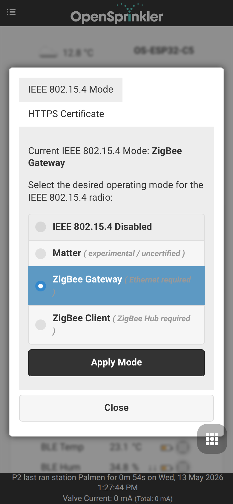
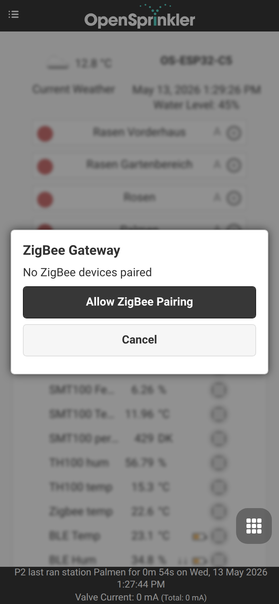
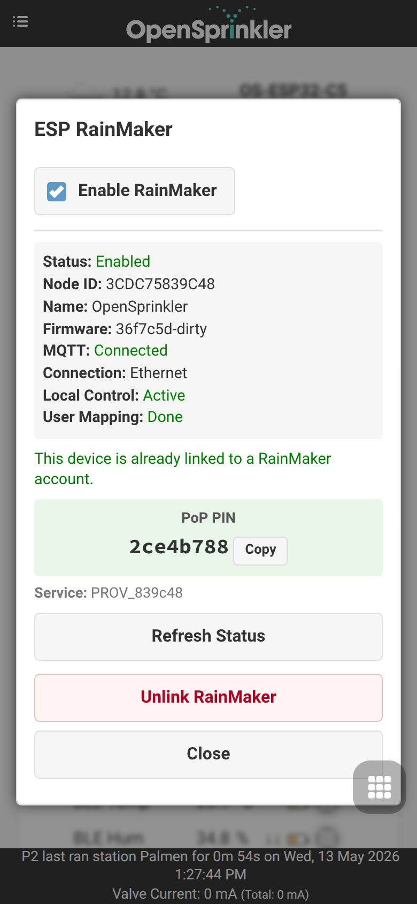
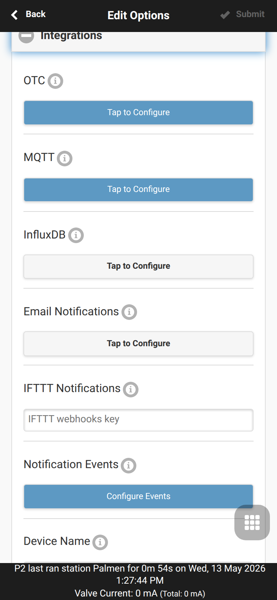
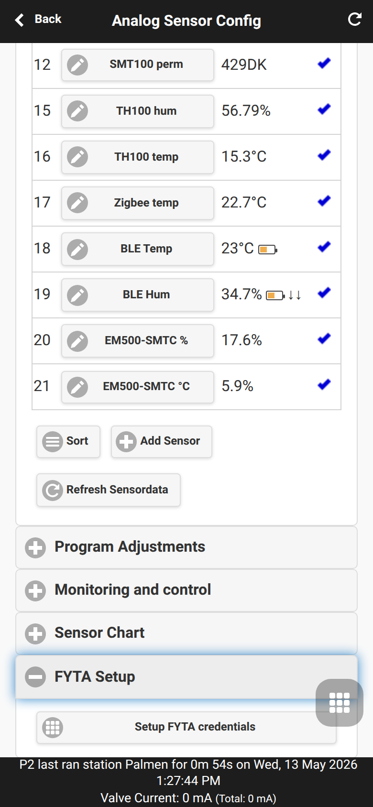

OpenSprinklerPro Extension
OpenSprinklerPro is the extended OpenSprinkler feature set for installations that need modern radio integrations, richer sensors, online updates, AI/MCP access and advanced monitoring. It builds on the normal OpenSprinkler controller functions: zones, programs, weather adjustment, logs, remote access and the web/app UI.
The OpenSprinklerShop firmware line, including OpenSprinklerPro, has its own firmware version numbering independent of upstream OpenSprinkler releases. The current OpenSprinklerShop firmware version is 2.4.0(199).
This page is standalone, but preserves references to the detailed local documentation where useful.
Overview
OpenSprinklerPro adds these extension areas:
- Online OTA update with update status, manifest checks and firmware backup endpoints.
- ESP32-C5 radio features: Zigbee gateway/client and IEEE 802.15.4 mode switching.
- BLE sensors on supported ESP32 builds and OSPi systems with Bluetooth.
- FYTA cloud plant sensors for soil moisture and temperature.
- Matter and ESP RainMaker for smart-home and cloud/app integrations on ESP32 builds.
- MCP access for AI assistants, either directly in firmware or through the external Node.js server.
- Notification events for MQTT, email, IFTTT and monitoring workflows.
Platform availability
OpenSprinklerPro is not one identical binary on every platform. Availability depends on hardware and build flags.
| Feature | ESP32-C5 Zigbee | ESP32-C5 Matter | ESP32 / non-C5 | ESP8266 | OSPi |
|---|---|---|---|---|---|
| Core irrigation, programs, web UI, logs | ✅ | ✅ | ✅ | ✅ | ✅ |
| Online OTA via web UI | ✅ | ✅ | ✅ | ✅ | ❌ |
| Script/Git based update | ❌ | ❌ | ❌ | ❌ | ✅ |
| HTTPS / ACME certificates | ✅ | ✅ | ESP32 dependent | ❌ | ❌ |
| Zigbee / IEEE 802.15.4 | ✅ | ❌ | ❌ | ❌ | ❌ |
| BLE sensors | ✅ | ✅ | build-flag dependent | ❌ | ✅ via Linux Bluetooth |
| Matter endpoint | ❌ | ✅ | build-flag dependent | ❌ | ❌ |
| ESP RainMaker | ✅ | ✅ | ESP32 dependent | ❌ | ❌ |
| FYTA sensors | ✅ HTTPS | ✅ HTTPS | ✅ HTTPS | ✅ HTTP only | ✅ HTTPS |
Built-in firmware MCP /mcp |
✅ ESP32 + USE_OTF |
✅ ESP32 + USE_OTF |
✅ ESP32 + USE_OTF |
❌ | ❌ |
| External Node.js MCP server | ✅ | ✅ | ✅ | ✅ | ✅ |
Notes:
- ESP32-C5 Zigbee and Matter variants are separate firmware choices. Zigbee and Matter cannot be active at the same time on the same ESP32-C5 radio.
- Zigbee endpoints require ESP32-C5 and
OS_ENABLE_ZIGBEE. - BLE endpoints require ESP32 and
OS_ENABLE_BLE; ESP8266 has no BLE support. - OSPi has the common REST, sensor, FYTA and monitor endpoints, but not ESP32 radio-stack endpoints.
See also: API and platform addendum, CHANGELOG.
UI function names and mobile screenshots
The OpenSprinklerPro extensions are operated from the normal web/app UI. The REST endpoints are primarily for automation, diagnostics and integrations; the user-facing workflow starts with these UI functions.
| Extension | UI function / menu path | Screenshot |
|---|---|---|
| Online firmware update | Side menu → Online Update |  |
| ESP32-C5 radio mode / Matter variant selection | Side menu → Setup ESP32 Mode |  |
| Zigbee Gateway | Side menu → ZigBee Gateway |  |
| ESP RainMaker | Side menu → RainMaker |  |
| MQTT, email, IFTTT and notification events | Footer menu → Edit Options → Integrations |  |
| Sensor configuration, FYTA and monitors | Footer menu → Analog Sensor Configuration |  |
| Local monitor rules | Footer menu → Analog Sensor Configuration → Monitoring and Control |  |
| FYTA setup | Footer menu → Analog Sensor Configuration → FYTA Setup |  |
| System diagnostics | Side menu → System Diagnostics |  |
Online OTA update
The Pro firmware adds online update management in online_update.cpp / online_update.h. The controller can check an update manifest, detect available firmware versions, start an update and expose update or backup status through API endpoints.
UI function: open the side menu and choose Online Update. This is the recommended workflow for normal users because it combines version check, backup, firmware selection, progress display and post-reboot restore handling in one dialog.
Platform notes:
- ESP32-C5 / ESP32 and ESP8266: OTA update is available through the web UI and manual firmware upload routes.
- ESP32-C5: dual OTA partitions provide rollback-oriented update layouts.
- OSPi: update through shell/Git/build scripts, not through the firmware web OTA flow.
- Online updates require a working Internet connection and a reachable update manifest.
Before updating, export the controller configuration from the side menu. On ESP32 and ESP8266 builds the current firmware also provides a full backup endpoint (/ub) used by the web UI before online updates. This backup is different from /sx, which only exports sensor configuration.
The UI workflow checks for an update, creates a backup, downloads the selected firmware variant, flashes it, shows progress, and can restore the previous configuration after reboot. Advanced update calls can override firmware URLs and SHA-256 hashes (zu, mu, fu, zs, ms) and select the zigbee or matter variant with vt; this is intended for reinstall, downgrade, or recovery workflows. OSPi is not supported by these firmware OTA endpoints and should be updated through the Linux/Git workflow.
API note for automation and recovery: /uc checks for updates, /uu starts an update, /us returns update status and /ub creates a full configuration backup.
ESP32 mode and radio management
On ESP32-C5 builds the web UI exposes a mode screen for choosing the active radio role. Use it when switching between Matter, Zigbee Gateway, and Zigbee Client firmware modes. A mode change updates the IEEE 802.15.4 configuration and requires a reboot before the new radio stack starts.
UI function: open the side menu and choose Setup ESP32 Mode. Use Apply Mode only when you intentionally want to switch the active firmware/radio role.
Practical guidance:
- Choose Zigbee Gateway when the controller should manage local Zigbee sensors/devices itself.
- Choose Zigbee Client when OpenSprinkler should join an existing Zigbee coordinator and expose local data points there.
- Choose Matter only on the Matter firmware variant; Matter and Zigbee cannot run at the same time on the ESP32-C5 radio.
- Prefer Ethernet for Zigbee-heavy installations because Wi-Fi, BLE and Zigbee share the 2.4 GHz radio environment.
API note for advanced integrations: /ir gets the radio mode, /iw sets it, /zj starts client join handling, /zg manages gateway data and /zs returns Zigbee status.
Zigbee gateway and Zigbee client
Zigbee is an ESP32-C5 Zigbee firmware feature. It is not available on ESP32-C5 Matter builds, ESP8266 or OSPi.
OpenSprinklerPro supports two Zigbee roles:
Gateway mode
In gateway mode the ESP32-C5 manages Zigbee devices locally:
- permit devices to join,
- list, query and remove devices,
- enrich device information with manufacturer/model data where available,
- process Tuya data point reports and map them to standard attributes where possible.
UI function: open the side menu and choose ZigBee Gateway. The page shows paired devices and contains the user action for permitting new devices to join.
API note for automation and diagnostics:
/irand/iwfor IEEE 802.15.4 radio configuration and mode changes,/zg,/zd,/zo,/zcfor gateway device management,/zsfor Zigbee status.
Client mode
In client mode the OpenSprinkler controller joins an external Zigbee coordinator and reports local data points such as sensors, zones, programs and rain-sensor state. ZCL endpoints cover temperature, humidity, flow, analog sensors, zones, programs and rain sensors.
Use Ethernet for Zigbee-heavy setups where possible. The local docs note that Wi-Fi and Zigbee share the 2.4 GHz band on ESP32-C5; during BLE scans Zigbee priority is lowered to reduce interference.
BLE sensors
BLE scanning and BLE sensor lists are available on ESP32 builds with BLE enabled, including the ESP32-C5 Pro variants. OSPi can use Raspberry Pi Bluetooth support; ESP8266 does not support BLE.
BLE support includes:
- discovered-device list and scan control (
/bd,/bs,/bcon ESP32 +OS_ENABLE_BLE), - device information fields such as manufacturer and model when exposed by the sensor,
- thread-safe access to discovered BLE devices,
- coexistence handling with Zigbee on ESP32-C5.
During ESP RainMaker BLE claiming, sensor BLE initialization is deliberately deferred until provisioning completes.
FYTA sensors
FYTA plant sensors integrate soil moisture and temperature through the FYTA cloud. They are not read directly over local radio; OpenSprinkler queries the FYTA Cloud API.
Platform availability:
- ESP32 / ESP32-C5: supported via HTTPS.
- ESP8266: supported via HTTP only because of platform TLS limitations.
- OSPi: supported via HTTPS.
Typical setup:
- Create or copy a FYTA API token from
web.fyta.de. - In the OpenSprinkler UI, open Settings → Sensor Settings → FYTA Setup and store the token or login credentials.
- Add a new sensor as FYTA Moisture or FYTA Temperature.
- Select a FYTA plant that has an assigned sensor.
- Use the value in program adjustments or monitors.
Recommended polling is 15–60 minutes to avoid excessive FYTA API traffic. See FYTA sensors.
Matter and ESP RainMaker
Matter
Matter is available only on ESP32 builds compiled with ENABLE_MATTER; in the Pro release set this is the ESP32-C5 Matter variant. It exposes pairing information through the JSON API, including commissioning state, QR-code URL and manual pairing code (/jm). Matter is not available on ESP8266 or OSPi.
UI function: on the Matter firmware variant, open the side menu and choose Setup Matter. The Zigbee firmware variant instead shows the ESP32 mode screen where the Matter variant can be selected before rebooting into Matter firmware.
To pair with Apple Home, Google Home, Alexa or another Matter controller, open the Matter page in the UI and open a commissioning window. If pairing fails, close and reopen the commissioning window and make sure the controller and phone/hub are on reachable networks.
API note for integrations: /jm returns commissioning state, QR-code URL and manual pairing code; /mm opens a commissioning window and accepts optional timeout t in seconds (default 300, maximum 900).
ESP RainMaker
ESP RainMaker is available on ESP32 / ESP32-C5 builds. It is not available on ESP8266 or OSPi.
UI function: open the side menu and choose RainMaker. The page shows provisioning state, PoP PIN, node/account status and the safe status refresh action.
RainMaker provisioning supports:
- BLE claiming for first-time setup when no TLS certificates exist,
- On-network provisioning when certificates exist and the controller must be linked to a user account,
- Ethernet participation for network connectivity while BLE is used only for claiming,
- status display, including provisioning state, BLE claiming, local control and the PoP PIN.
During BLE claiming, BLE sensors wait until RainMaker releases BLE resources. The status page also reports node ID, MQTT connection, user mapping, local-control state, certificate/key presence, whether sensors are deferred, Ethernet usage and provisioning service data. See RainMaker provisioning.
API note for service use: /rk returns RainMaker status. Maintenance actions are separate: reset_mapping=1 clears the user mapping while keeping the device claimed; factory_reset=1 performs a full RainMaker reset and reboots. /ru unlinks the account and also triggers reset/reboot behavior.
HTTPS certificates and ACME
ESP32 builds with HTTPS support can use the internal certificate, a custom PEM certificate/key, or an ACME/Let's Encrypt certificate. The UI certificate screen shows certificate type, subject, issuer and validity period.
Available firmware endpoints:
/tgreturns the active certificate information./tluploads a custom PEM certificate and key; reboot after upload./tareturns ACME domain, email, server, enabled flag, status, next check and renewal settings./tcsaves ACME configuration and can request a certificate immediately./txdeletes ACME data and reverts to the internal certificate.
Use ACME only when the controller is reachable under a valid domain and the required challenge path can be reached from the Internet.
MCP server and AI integration
OpenSprinklerPro distinguishes two MCP options.
Built-in firmware MCP endpoint /mcp
The built-in MCP server runs inside ESP32 firmware builds with USE_OTF enabled. It is accessed with:
POST http://<controller-ip>/mcp
Content-Type: application/json
It uses MCP Streamable-HTTP transport with JSON-RPC 2.0 and accepts the same MD5 password hash as the REST API, either as ?pw=, X-OS-Password or a bearer token. It exposes a compact set of core tools such as get_all, get_options, get_programs, get_station_status, manual_station_run, change_controller_variables and pause_queue.
Platform availability: ESP32 / ESP32-C5 only with USE_OTF; not ESP8266 and not OSPi.
External Node.js MCP server
The external server under tools/mcp-server/ runs outside the firmware and proxies the REST API over stdio. It works with ESP8266, ESP32 and OSPi controllers and exposes a broader 40+ tool set including sensors, monitors, Zigbee, BLE and system resources when those endpoints exist on the target controller.
See MCP server and Built-in firmware MCP API.
Notification events
OpenSprinklerPro can send selected events through MQTT, email and IFTTT; InfluxDB can be used for measurement data. Events are configured in Options → Integrations → Notification Events.
UI function: open the footer menu, choose Edit Options, expand Integrations, then open Configure Events under the required channel.
The local documentation lists 17 events, including:
- program start,
- station start and finish,
- rain delay update,
- sensor 1 / sensor 2 update,
- flow sensor update,
- weather adjustment update,
- controller reboot,
- flow alert, no-flow alert and pipe-burst alert,
- under/overcurrent fault,
- monthly water report,
- monitor warnings at low, medium and high levels.
Flow-related events require a configured flow sensor on SN1. Avoid enabling every event on every channel; many notifications can delay responses and may affect very short irrigation cycles.
See Notification events.
Monitors and local alerts
The current UI contains monitor management for sensor values and local alert checks. Monitors let you watch configured sensor readings and create low, medium or high priority warnings when thresholds are crossed. Monitor warnings can also be used as notification events, so keep thresholds specific and avoid duplicate alerts on every channel.
UI function: open the footer menu and choose Analog Sensor Configuration. Use Monitoring and Control for monitor rules and FYTA Setup for FYTA credentials and plant selection.
Typical workflow:
- Configure the underlying sensor first, for example FYTA, analog, RS485/Modbus, BLE, MQTT, remote or weather sensor.
- Add a monitor and select the source sensor/value.
- Define lower/upper thresholds and priority.
- Use system diagnostics and the notification bell to confirm whether warnings are active.
API note for automation: /mc exposes monitor configuration, /ml the monitor list and /mt supported monitor types.
System diagnostics and water usage
The sidebar System Diagnostics popup reports runtime state such as firmware/hardware version, reboot reason, free storage, free memory, weather request/response state, OTC status and integration status for MQTT, InfluxDB and IFTTT. Use it after updates, network changes or integration setup.
API note: water usage data is available separately through /jw, which returns the pulse rate, current month and stored monthly flow records. This complements normal watering logs and is useful for monthly reports.
UI and options notes
OpenSprinklerPro uses the normal OpenSprinkler web UI and mobile app workflow:
- The homepage shows zones, weather, watering percentage, device time and status footer.
- The first-time setup wizard guides new controllers through Wi-Fi/Ethernet/cloud choices and default-password handling.
- The side menu provides site management, export/import, password change, reboot and system diagnosis.
- The footer menu gives quick access to logs, rain delay, pause queue, run-once, program editing and options.
- Options → Weather & Sensors configures weather adjustment, binary sensors, flow sensor and sensor-based automation.
- Options → Integrations configures OTC, MQTT, email, IFTTT and notification events.
- Sensor settings include FYTA credentials, sensor-program adjustments and monitors.
The controller supports virtual station types such as RF, remote IP/OTC, GPIO, HTTP and HTTPS. Configure them in the station attributes dialog, advanced tab. GPIO is shown only when free GPIO pins are available; HTTPS virtual stations are not available on ESP8266 or OSPi according to the platform matrix.
Useful UI references: Web UI, Options, Wiki home.
API and documentation references
- CHANGELOG — release notes for the Pro feature set.
- API and platform addendum — current REST endpoint/platform notes.
- Firmware MCP API — built-in
/mcpprotocol details. - External MCP server — Node.js MCP setup and tool list.
- RainMaker provisioning — BLE claiming and on-network provisioning.
- FYTA sensors — FYTA setup and troubleshooting.
- Platform availability — hardware feature overview.